Un Sueño Forjado en la Pista
En 1963, Bruce McLaren, un piloto de origen neozelandés, fundó McLaren con el objetivo de revolucionar el mundo del automovilismo. Tras varias victorias en Can-Am y otras competiciones, McLaren dio el paso audaz hacia la Fórmula 1 en 1966. Con una visión de velocidad y precisión, McLaren nació para desafiar los límites de lo posible, no solo en las pistas, sino en la tecnología automotriz.
El McLaren M2B, el Comienzo de la Leyenda
El McLaren M2B, lanzado en 1966, marcó el primer paso de McLaren en Fórmula 1. Este coche, aunque no alcanzó grandes victorias, fue el primero en llevar el nombre de McLaren al escenario mundial. Su debut fue una promesa de lo que vendría: un enfoque centrado en la innovación y la tecnología de vanguardia.
De las Pistas a las Calles, La Expansión de McLaren
McLaren rápidamente se posicionó como líder en la Fórmula 1, pero su genio no se limitó solo a las carreras. En 1992, McLaren presentó su primer vehículo de producción en serie, el McLaren F1, que rápidamente se convirtió en una leyenda automotriz. Este coche no solo estableció un récord mundial de velocidad (386.4 km/h), sino que también fue el primer coche de producción en utilizar una estructura de fibra de carbono para mayor ligereza y seguridad. Con un motor V12 y un diseño de tres asientos, el F1 no solo ofrecía rendimiento, sino también lujo extremo. Este vehículo puso a McLaren en la élite del mercado automotriz, fuera del ámbito de las carreras.
Otros vehículos icónicos: - McLaren MP4-12C (2011): Un automóvil de lujo y rendimiento extremo que representó el comienzo de una nueva era para McLaren en el mercado de autos de lujo. Con un motor V8 biturbo de 3.8 litros, el MP4-12C ofreció una experiencia de conducción sin igual, con tecnologías innovadoras derivadas directamente de la Fórmula 1. - McLaren 650S (2014): La evolución del MP4-12C, con un diseño más afilado, un motor más potente y una aerodinámica refinada. El 650S destacó por su rendimiento en pista y su comodidad en la carretera, un equilibrio perfecto entre las demandas de los conductores más exigentes. - McLaren P1 (2013): El P1 fue el primer hiperauto híbrido de McLaren, fusionando la tecnología de la Fórmula 1 con la eficiencia de los vehículos eléctricos. Su motor híbrido de 903 caballos de fuerza lo convirtió en una bestia sobre ruedas, que fue una referencia de innovación tecnológica.
Más Allá de la Velocidad, Un Impacto Perdurable
McLaren no solo ha dejado huella en las pistas de carreras, sino que su legado se extiende a través de innovaciones tecnológicas que han transformado tanto los vehículos de carreras como los coches de producción. Con más de 180 victorias en Fórmula 1 y 12 campeonatos de pilotos, McLaren ha demostrado que la excelencia técnica es su verdadera fuerza.
El McLaren F1, uno de los autos más codiciados de todos los tiempos, sigue siendo un símbolo de la perfección en ingeniería. Además, su capacidad para reinventarse con el paso de los años, lanzando coches como el McLaren P1 y el Speedtail, asegura que su legado no es solo histórico, sino también visionario hacia el futuro.
El dominio de McLaren
Desde su debut en 1966, McLaren ha sido un nombre que resuena con éxito en la Fórmula 1, alcanzando 8 campeonatos de constructores y 12 campeonatos de pilotos. Leyendas como Ayrton Senna y Lewis Hamilton han formado parte de su legado. Además, McLaren ha sido pionero en avances técnicos como el difusor de 2009, que permitió al equipo ganar con gran ventaja. Hoy en día, McLaren sigue siendo uno de los equipos más fuertes y técnicos en la Fórmula 1, con un enfoque renovado en la tecnología híbrida y sostenible, adaptándose a los desafíos del futuro mientras mantiene intacta su visión de velocidad y rendimiento.
 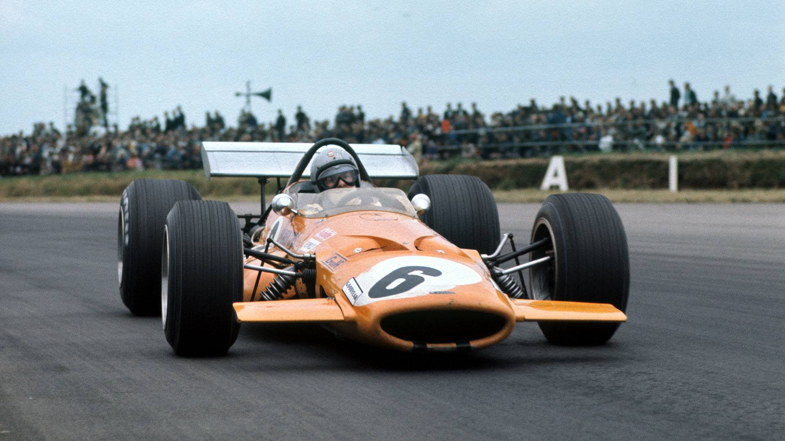
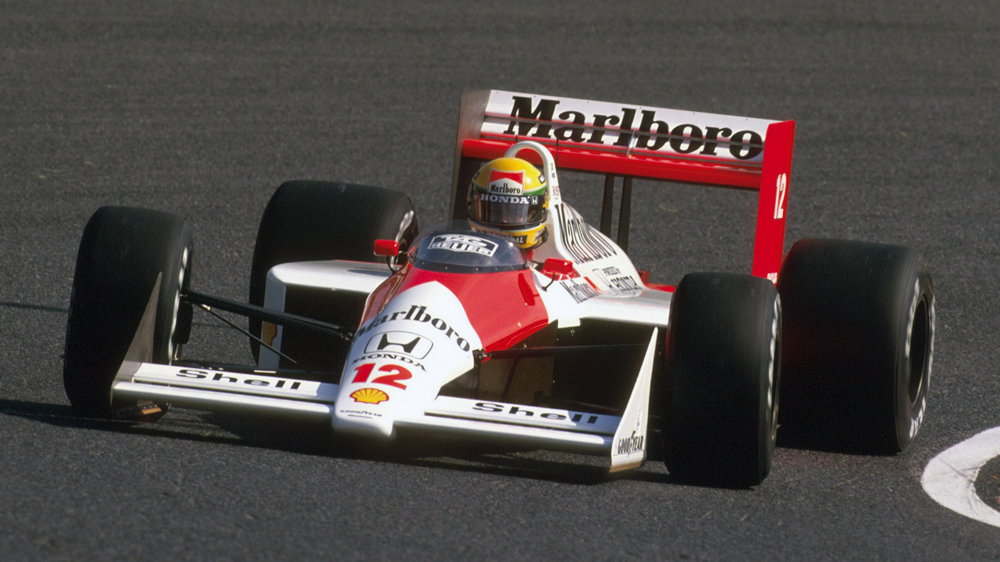
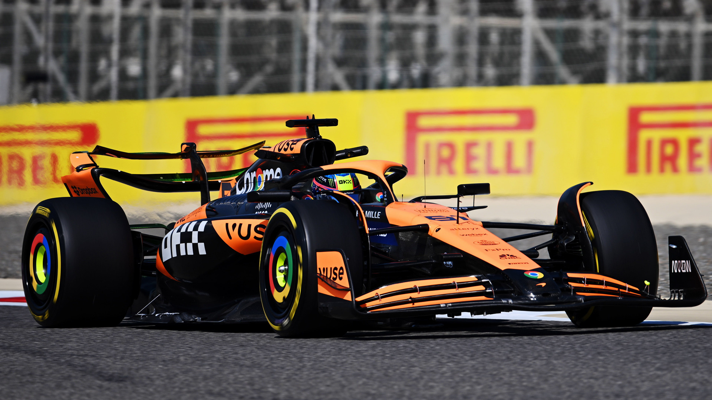
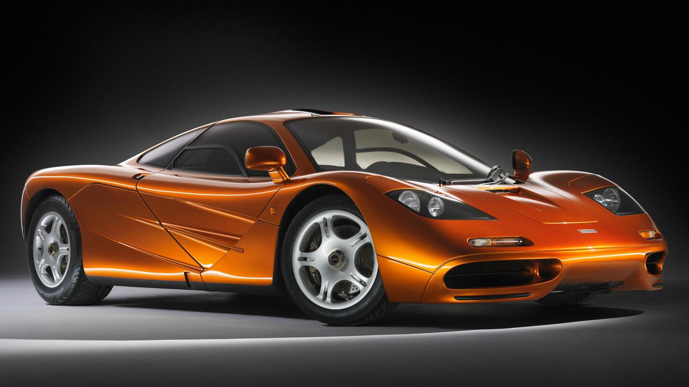
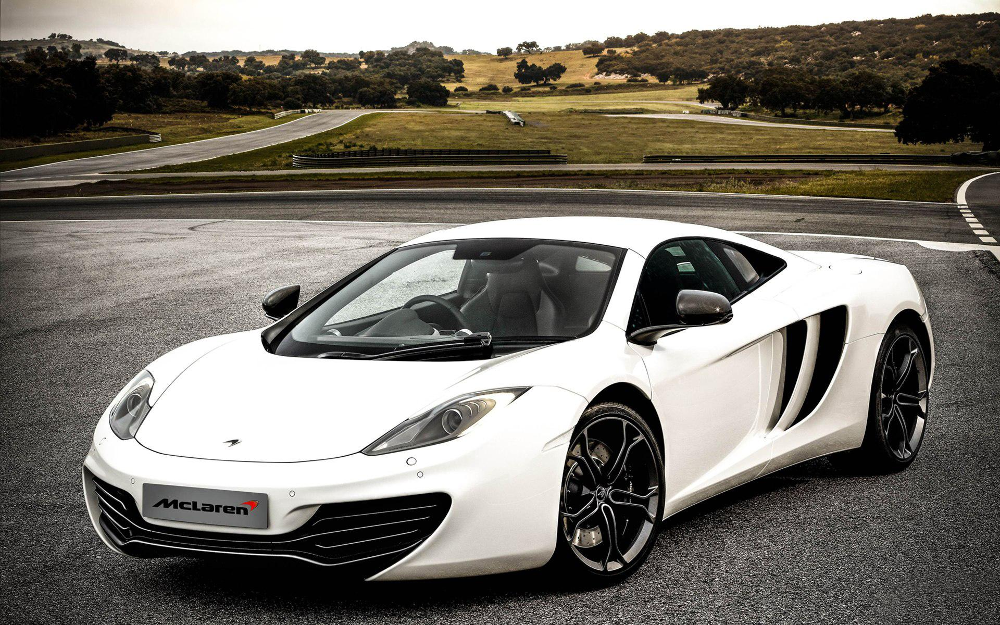
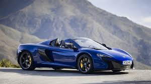
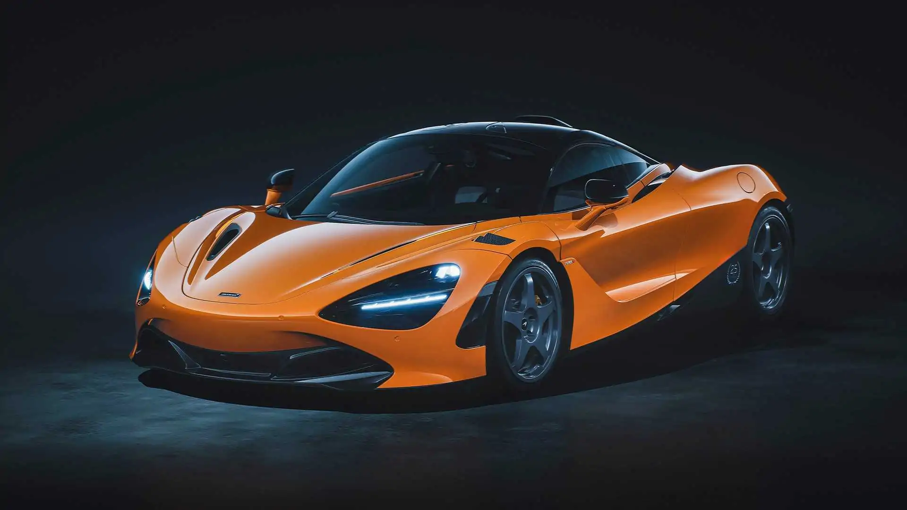
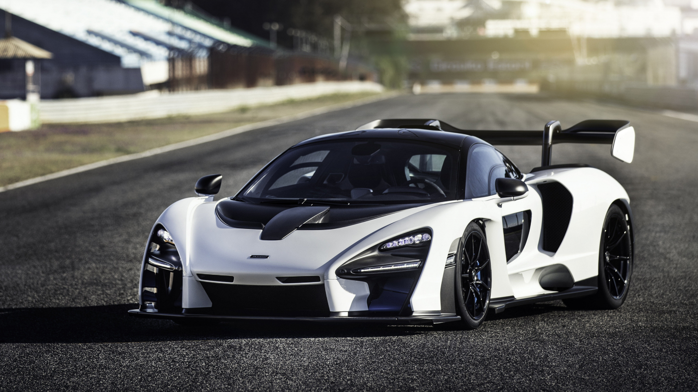
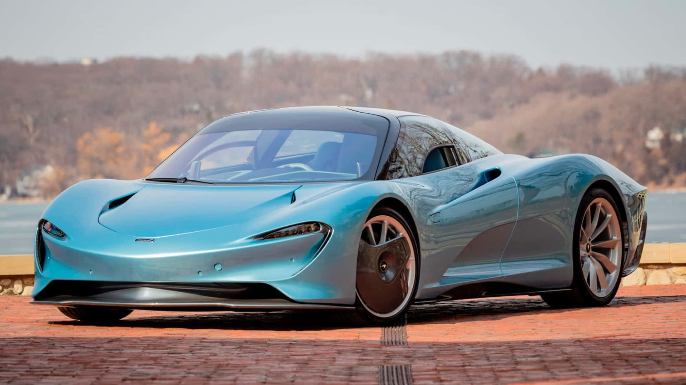
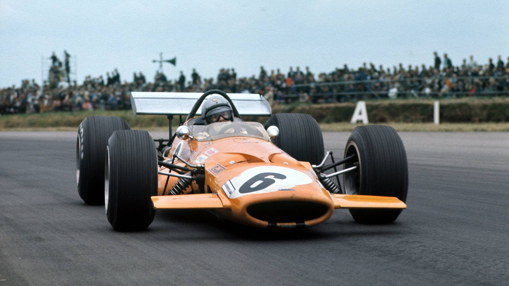
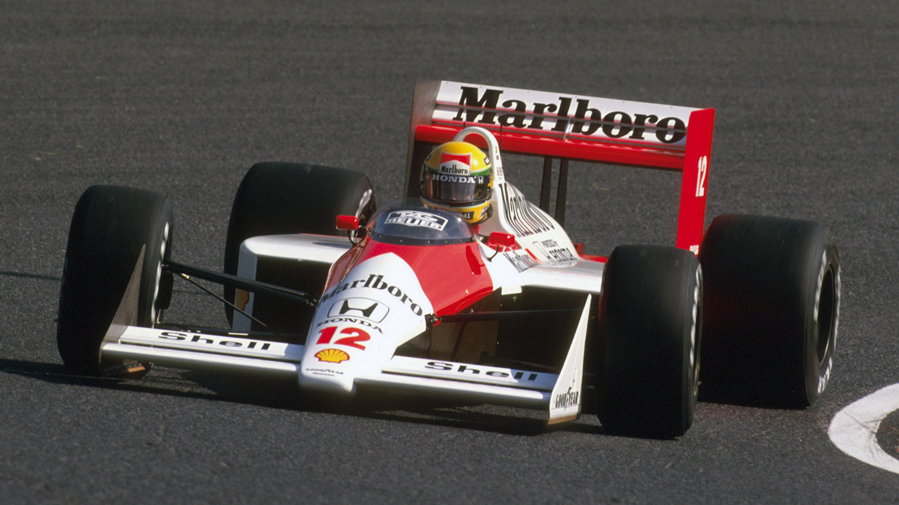
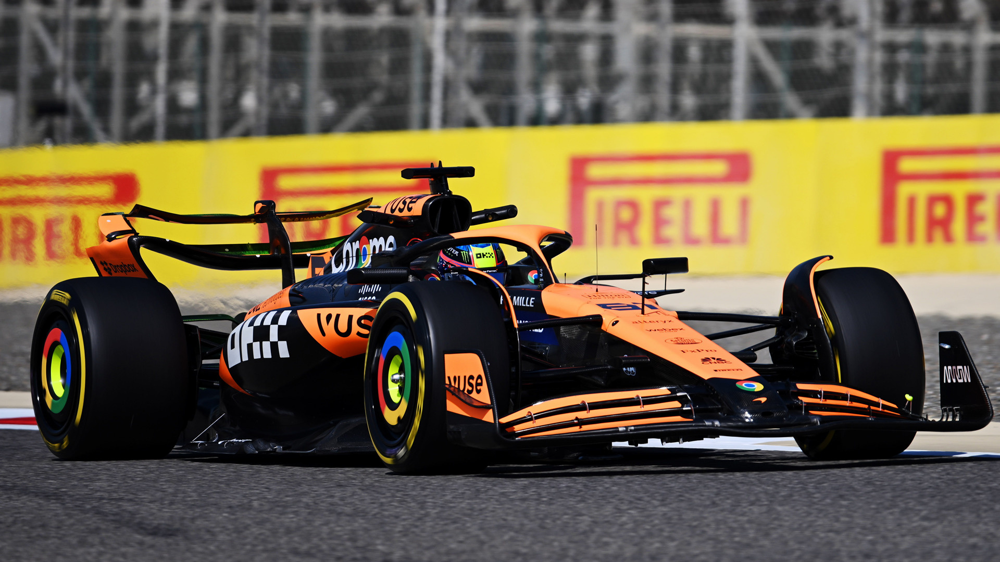
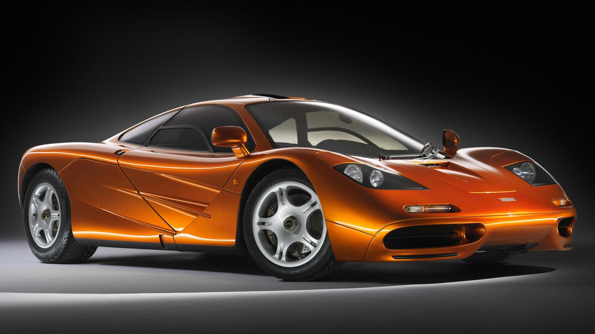
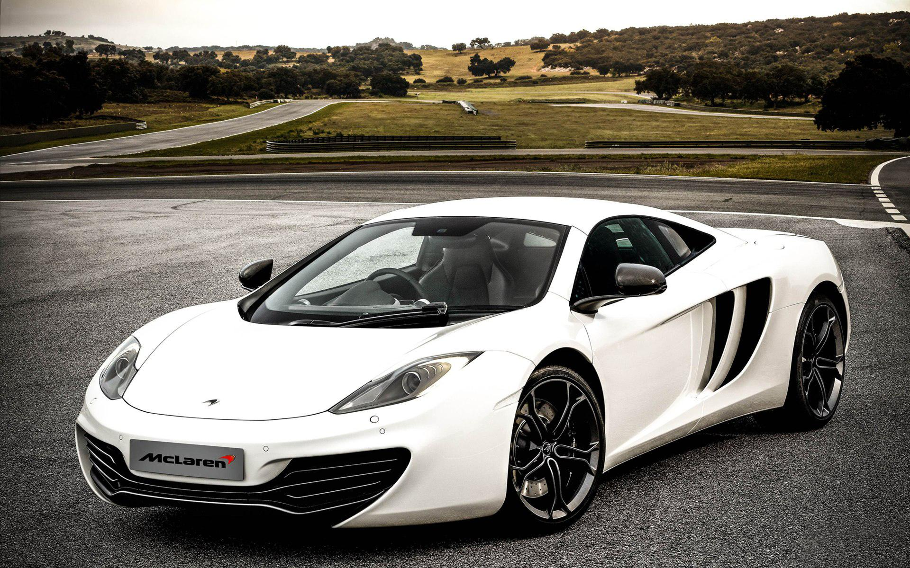
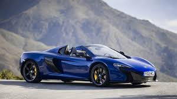
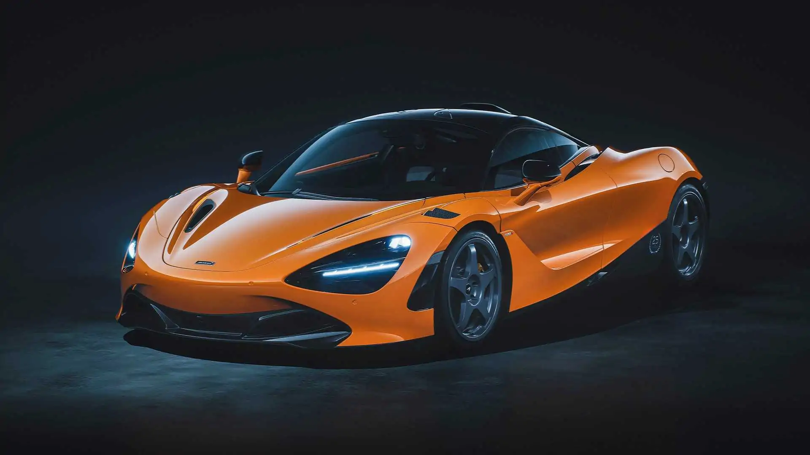
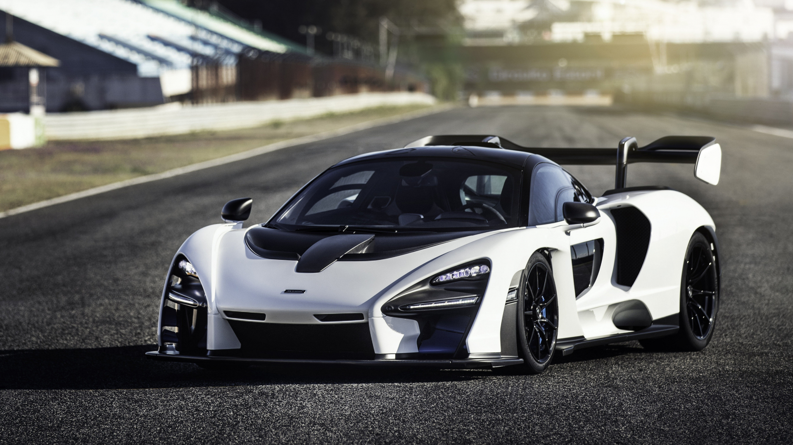
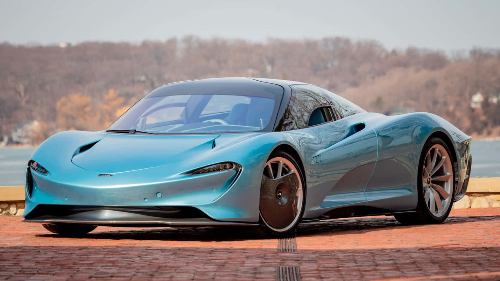